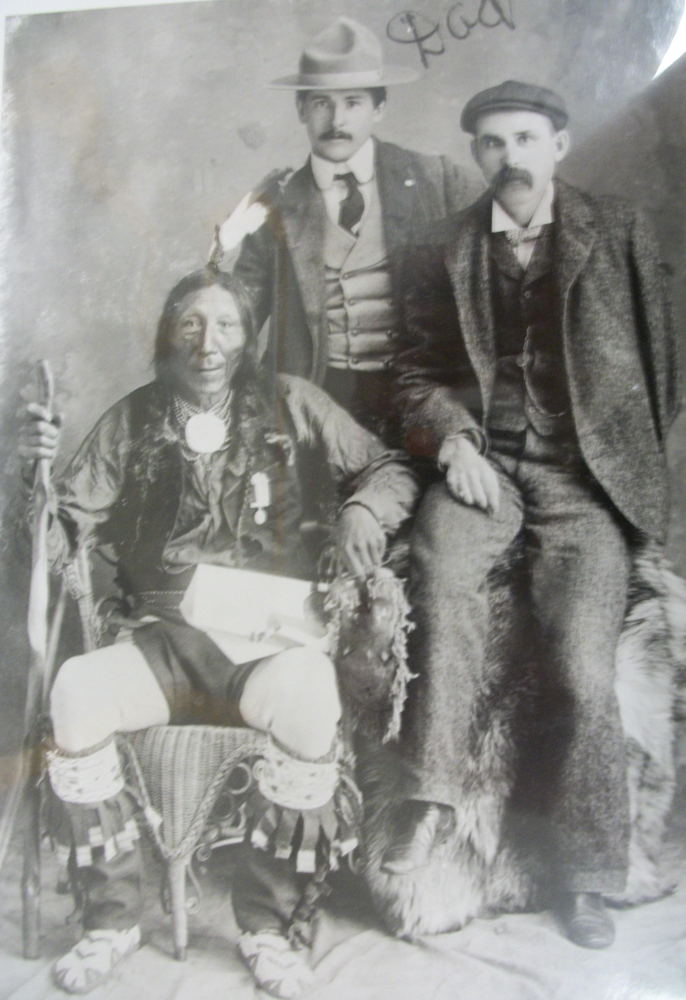

By Frances Scott
|  |
|
T.H.S. Chambury poses with two friends, Prince Albert circa 1901 |
The Saulteaux moved into Saskatchewan after 1750. They were first noted by John Tanner around 1796 when he saw them
chasing the GrosVentres westward into the Rocky Mountains. The Saulteaux are related to three other Ojibway tribes from Ontario: the Ottowa, near Georgian Bay; the Missassauga, on the Manitoulin Island and the Potawatomi who lived along Lake Huron.
The “Council of Three Fires” united these three tribes in summer, when they fished, gathered maple syrup, berries and wild rice together. In the winter the three tribes went their separate ways to hunt moose, caribou, elk, beaver, bear, deer and rabbits. The Ojibway followed the fur trade as it expanded west. In Saskatchewan the Saulteaux adjusted quickly to the plains way of life and have developed their own culture. Uunlike other bands in Saskatchewan, there earliest Saulteaux tended to camp near trading posts like Fort Pelly. They challenged the Blackfoot tribe, the GrosVentres and the Sioux or Lakota tribes for territory, often making summer raids on them.
These summer raids interfered with trade, and the traders often tried to stop them.
(as told by Florence Machiskinic)